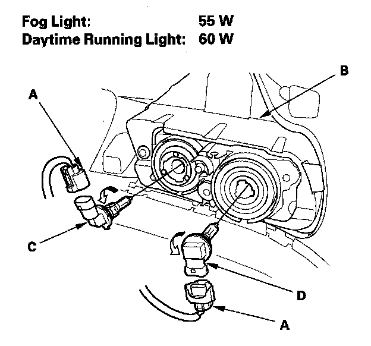

Fog Light/Daytime Running Light Bulb
Fog Light/Daytime Running Light Bulb Replacement1. Remove the inner fender.

2. Disconnect the 2P connectors (A) from the fog lights/daytime running lights (B).
3. Turn the fog light bulb socket (C) and the daytime running light bulb socket (D) 45° counterclockwise to remove them from the housing.
4. Install new bulb(s) in the reverse order of removal.
NOTE: Do not touch the glass of the bulb with your hands. If necessary, clean the glass area with alcohol.